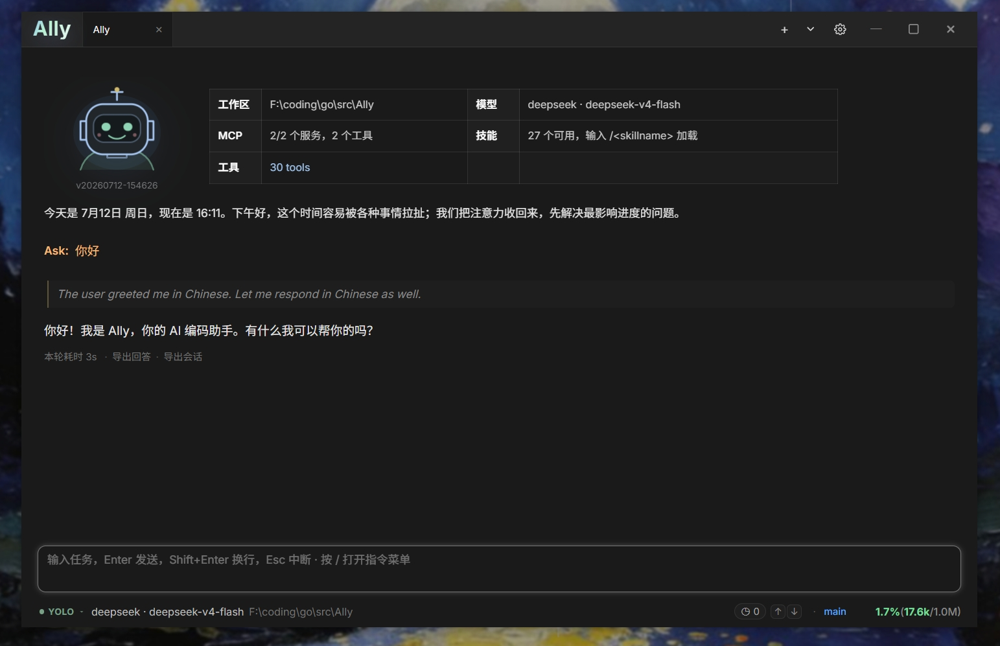

面向本地项目的桌面 AI 编程助手——理解代码、编辑文件、搜索工作区、管理任务，一场对话完成整个开发流程。

Ally 在严格的工作区安全边界内读写你的项目，每一步操作都有可视化反馈。
读取、搜索、创建、编辑、删除都在工作区边界内进行，编辑带乐观并发校验，多文件改动原子提交。
每次修改都在聊天里直接呈现对比视图、命令输出和完整的失败原因，改动一目了然。
发行包自带 ripgrep，无需安装任何东西，开箱即用地在整个工作区里极速搜索代码。
把繁重任务委派给并行子代理，实时查看步骤、工具活动和 Token 用量，收回内联的最终摘要。
用可发现的 Skills 扩展工作流，通过全局记忆把跨项目的知识沉淀下来，下次自动可用。
运行开发服务器等后台进程并在任务中心查看日志，还能创建进程级的定时任务自动执行工作。
在聊天中安全渲染交互式 HTML 结果——小工具、数据预览、组件原型，即写即看。
执行模式直接干活、计划模式只读规划、访谈模式先问清楚再动手——按任务自由选择。
跟随系统代理或手动配置 HTTP/HTTPS/SOCKS5，一致应用到模型、MCP、命令和后台服务。
不被单一服务商绑定。三大 API 格式 + 兼容服务 + MCP 协议，模型和工具随你组合。
无需复杂配置，下载即用。
从 GitHub Releases 获取 Windows / macOS / Linux 版本
启动 Ally，选中你要工作的本地项目文件夹
在设置中填写服务商、模型、API 地址和 Key
用自然语言描述任务，剩下的交给 Ally
免费、开源、跨平台。
前往 Releases 下载